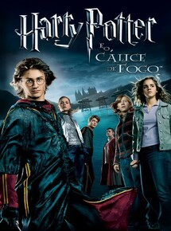

Diretor: Mike Newell.
Elenco: Daniel Radcliffe, Emma Watson, Ruppert Grint.
Gênero: Fantasia/Aventura.
Censura: 14 Anos.
Tempo de duração: 2h 37m.
Sinopse: Harry retorna para seu quarto ano na Escola de Magia e Bruxaria de Hogwarts, junto com os seus amigos Rony e Hermione. Desta vez, acontece um torneio entre as três maiores escola de magia, com um participante selecionado de cada escola pelo Cálice de Fogo. O nome de Harry aparece, mesmo não tendo se inscrito, e ele precisa competir.